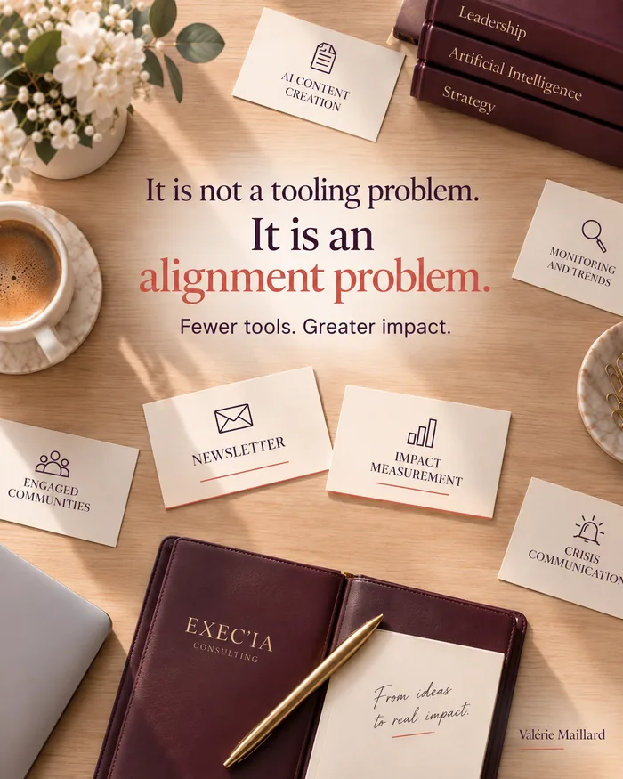

More AI tools do not
mean more impact.
It is not a tools problem.
It is a trade-off problem.
 Article developed from my LinkedIn post ()
Article developed from my LinkedIn post ()
Updated on
Short version →
Heads of communications: more AI tools do not mean more impact. It is a question of choosing, not of tools.
Three questions are enough to sort them: is there a real challenge?
A named budget and owner?
Could you stop it tomorrow without regret?
Without that sorting, a team ends up running five projects halfway rather than two all the way. Gartner even predicted that 30% of generative AI projects would be abandoned for lack of clear business value.
The ritual that prevents this drift: a short review every quarter, where each tool has to justify its place.

You run your company’s communications?
You know the reflex: as soon as a new AI tool comes out, you try it. Then another. Then another.
Coordinating communications for the McKinsey France Alumni network, I saw how easy it is to add one more tool. And how rare it is to take the time to ask which one matters.
There is nothing careless about that reflex. Every new tool promises to succeed where the last one failed. And refusing to try it feels like falling behind. The pressure is real, fuelled by the speed at which new versions come out.
The problem is not the tools. It is choosing between them.
A Gartner study predicted that 30% of generative AI projects would be abandoned after the first trial, for lack of clear business value. That figure does not mean these projects were technically poor. It means they were never tied to a challenge clear enough to see them through.
A more recent survey points the same way. Published by Gartner in April 2026 and covering 782 IT infrastructure and operations leaders, it shows that only 28% of AI use cases fully meet their return-on-investment expectations, and that 20% fail outright, most often because they were too ambitious or poorly scoped.
The easiest symptom to spot?
A team that can name the last five tools it tested without hesitating, but struggles to say which one changed anything measurable. It is not a lack of curiosity. It is a missing filter between trying and adopting.
🛠️ Why do more AI tools not mean more impact?
Because more tools means more dispersion. And a team running five projects halfway, rather than two all the way.
🎯 What three criteria decide which AI tool is worth keeping?
- A real brand, crisis or launch challenge, not a trend to follow?
- A committed budget and a named owner ready to decide, not just to watch?
- A tool you could switch off tomorrow morning without anyone missing it?
Why these three criteria specifically?
Because each one removes a trap.
The first rules out passing fads: testing a tool because a competitor uses it is not a challenge, it is a comparison.
The second forces a decision: without a budget or a named owner, a tool stays a trial, never a choice.
The third protects you from money already spent: a tool you no longer dare to stop, because of the time it took to set up, ends up costing more than the one you never launched.
Who should carry this trade-off role on a small team?
On a small communications team, there is no need for a new job. It is enough for one person, often the one already managing the budget or the schedule, to be clearly tasked with applying the three criteria to any new tool, before it settles in.
Day to day, it changes almost nothing, except at one precise moment: when someone suggests trying a new tool. Then one question is enough: which real need does it meet that our current tools do not?
If nobody asks that question, every tool settles in by default, without anyone choosing it. The risk is not that a bad tool takes over. It is that ten average tools live side by side, each half-covering a need another already covers.
Three projects seen through beat fifteen moving in parallel without ever landing.
AI can show you many options. It will never choose for you.
What separates a tool you keep from one you tolerate?
A tool you keep clearly meets the three criteria: a named challenge, an assumed budget, a person ready to answer for it in front of the team. A tool you tolerate usually meets none of them. It was tried once, nobody decided to stop it, and it keeps running in the background, eating team time without anyone having chosen it.
The difference does not show in the tool. It shows when you ask the team: why this one rather than another?
If the answer is slow to come, no choice was ever made. The tool stayed out of habit. Try it at your next team meeting: pick a tool at random and ask the person using it to say, in one sentence, which result it changed.
What happens when no one decides?
In practice, one obstacle keeps coming up: nobody is clearly tasked with sorting. Everyone keeps the tool they tested, because they put time into it and do not want to see it dropped. Without someone whose role it is, and who is attached to no tool in particular, the list only grows. Nobody decides not to decide. The list simply grows while everyone waits for someone else to deal with it.
Deciding also means accepting that a dropped tool is not a failure. It is proof the sorting worked. A team that never drops anything has probably never sorted.
How do you apply this sorting day to day?
Sorting works better as a ritual than as a big decision: a short review every quarter, where each active tool has to justify its place against the three criteria. Whatever no longer passes is stopped, without a long debate.
That rhythm avoids the most common trap: waiting for the big annual clean-up, by which time the list has already doubled. A short, regular ritual takes less energy. Above all, it stops the list from ever getting long enough to need a big clean-up.
How do you introduce this ritual without adding a new burden?
By keeping it short. Fifteen minutes are enough if each tool goes through the same three criteria, always in the same order. What makes it heavy is not how often it happens. It is the temptation to add new criteria each time. Three stable criteria, applied without exception, beat ten criteria adjusted case by case.
The sign it works?
Not the number of tools removed. It is that the list of active tools stops growing on its own between two reviews.
💬 In your communications, how many
AI initiatives
are moving forward, and how many never get finished?
Sources: Gartner, “Predicts 30% of Generative AI Projects Will Be Abandoned After Proof of Concept By End of 2025”, 2024; Gartner, “Gartner Says AI Projects in I&O Stall Ahead of Meaningful ROI Returns”, 7 April 2026.
Going further
Four more questions to take the thinking further.
Read the full articleabout 3,000 words
Mapping your tools in one hour
Before sorting, you need to see. Many teams discover they do not know how many tools are running, who pays for them, or who uses them.
A five-column table is enough:
the tool, and the need it covers, in one sentence;
the person who uses it most, and the one who answers for it;
the cost, subscription and time to learn included;
the date it was last really used;
the date of the next review.
This table often reveals duplicates: three writing tools, two image generators, one transcription app paid for by two people. The sorting then starts on its own.
How do you say yes to a new tool?
With a short trial whose rules everyone knows. One person, one precise use, thirty days, one indicator chosen in advance.
At the end of the month, three possible outcomes: the tool joins the list, it replaces an existing tool, or it stops. The trial commits you to nothing and does not settle in by default. This framework makes yes easier, because it makes no less painful.
The trap of AI features you already have
Before buying a new tool, one check often saves a subscription: the office suite, design tool or customer relationship software you already pay for may offer the same feature.
These built-in features are sometimes less spectacular. But they have one big advantage: they live inside tools the team already knows, with the security rules already in place.
What about free tools?
Free does not mean no cost. You often pay in learning time, in data handed over, and in terms of use that can change overnight.
A free tool can be used to test an idea. It should never receive confidential information, or become a working tool without going through the same review as the others.
Why piling up tools damages the brand
In communications, dispersion has a cost other functions know less well: consistency. Every tool has its own habits of tone, its turns of phrase, its visual style.
When five people produce with five different tools, the brand ends up speaking with five voices. Readers do not know why, but they feel something no longer fits. Reducing the number of tools is also about protecting an identity.
How do you keep a brand voice with AI?
Three simple rules, shared by all the tools you keep:
a short style guide, with the tone, the words to use and the ones to avoid, given to the tool at the start of every task;
examples of successful texts, which show the expected voice better than an abstract instruction;
a human review before any publication, by someone who knows the brand.
The fewer tools there are, the easier these rules are to keep. With two tools, you master them. With ten, you give up.
What about generated images?
Here I would be especially careful. An image produced by a tool can reuse, without saying so, elements close to protected works, or the face of a real person.
Before publishing, three checks: do the tool’s terms allow commercial use?
Does the image imitate a recognisable style or work?
Does it show an identifiable person?
When in doubt, legal advice costs less than a complaint.
Depth rather than breadth
A team that masters two tools often produces better work than a team that skims ten. Mastery comes with time: refined instructions, known mistakes, learned shortcuts.
Every new tool resets that counter to zero. One more reason to choose few, and to go deep on what you chose.
What do you do when a vendor changes its prices or terms?
It happens often, and fast. A free tool becomes paid, a feature disappears, the rules on data change.
A team that depends on ten tools goes through these changes ten times. A team that chose two can follow them closely and prepare a fallback. Two precautions help: check that you can export your content easily, and keep a record of the instructions that work, so you can reuse them elsewhere if needed.
AI in crisis communications
A crisis is the worst moment to discover a tool’s limits. Answers must be accurate, dated, approved, and sometimes reviewed by a lawyer.
AI can help prepare key messages, summarise what is being said or translate a statement. It must never publish on its own, or reply directly to a journalist or an angry customer. Set that rule in a calm moment, before the crisis: you will not have to improvise it at the worst time.
How do you involve agencies and suppliers?
By sharing with them the list of tools you kept and your brand rules. An agency using its own tools without knowing your choices brings back the dispersion you have just reduced.
One conversation at the start of the collaboration is often enough: which tools do you use, for what, and how do you respect our guidelines?
It saves plenty of last-minute corrections.
Which indicators should a communications team track?
Three simple measures show whether the tools are useful:
the time between a request and publication;
the number of approval rounds per piece of content;
the share of content published without substantive correction.
If these figures do not move after a tool arrives, the tool takes time without giving any back. That is an objective argument for deciding at the quarterly review.
And when the tool comes from the CEO?
Sometimes a tool is chosen at the top, because a leader saw it at a peer’s company or at a trade show. It deserves the same review as the others, no more, no less.
Applying the three criteria to a tool that came from the top is not disloyal. It is doing leadership a favour: they want a result, not one more tool. Presented that way, the sorting is almost always well received.
A typical example
Take a five-person communications team that built up about ten tools in a year. The map shows three writing tools, two image generators, two transcription tools and several forgotten trials.
After a review, the team keeps one writing tool, one image tool and one transcription tool, and stops the rest. It trains everyone on those three tools, writes its style guide and sets its next review. Three months later, it produces as much, with lower costs, a more consistent voice and a less scattered team.
What choosing sets free
Choosing few tools does not shrink ambition. It frees attention for what gives a communications team its value: the message, judgement, the relationship with audiences.
The tool remains a means. Strategy remains your job.
How do you avoid piling up tools?
With a simple rule: no new tool without a named use, an owner and a review date. A tool with no owner ends up serving nobody, while it keeps costing money.
When a new tool arrives, ask the right question: which tool does it replace, or which use does it make unnecessary?
This discipline also protects the budget. Every tool withdrawn frees up a subscription, training time and attention for the ones that remain.
Once a year, list the tools you pay for against how they are actually used. You will often find two teams paying for the same need.
The right reflex: every new subscription goes through the same person, who checks it does not duplicate an existing one.
How do you properly retire a tool that is no longer used?
Set a date, warn the people who use it, and recover what needs recovering: data, templates, good habits. Stopping a tool is prepared like a launch, only shorter.
A team that knows how to stop dares to test more, because it knows a trial does not commit it forever.
Warning people a few weeks ahead, and letting everyone export their work, avoids most of the frustration.
Write down why you stopped it. It will stop the same tool coming back in a year, under another name or through another team.
Think about the vendor too: many subscriptions renew automatically, often for a full year. Put the cancellation date in the diary.
What does the choosing itself cost?
Very little money, a little time. A monthly review of a few uses is often enough, with someone who has the power to say yes or no. What is expensive is not doing it: scattered projects that never land.
Sorting is an investment of attention, not an extra budget.
The simplest way: give this meeting to the person who already sets the team’s priorities. The ritual then slips into time that already exists.
For an SME, one hour a month around a shared table of current uses is usually enough to get started.
The real cost is the courage to say no to a tool someone likes. That is why you need a person who clearly has that power.
How do you help a team say no to a good tool?
By reminding them the question is not how good the tool is. It is how useful it is for a specific challenge, right now. An excellent tool that serves no priority need waits its turn, and the team is allowed to like it.
Saying no at that moment is what lets you say a stronger yes to what matters.
Put the answer in writing: it will serve as a reference the next time the tool comes back into the conversation.
Also suggest adding the tool to a waiting list, with the condition that would make it a priority. The no becomes a “not now”, which is far easier to accept.